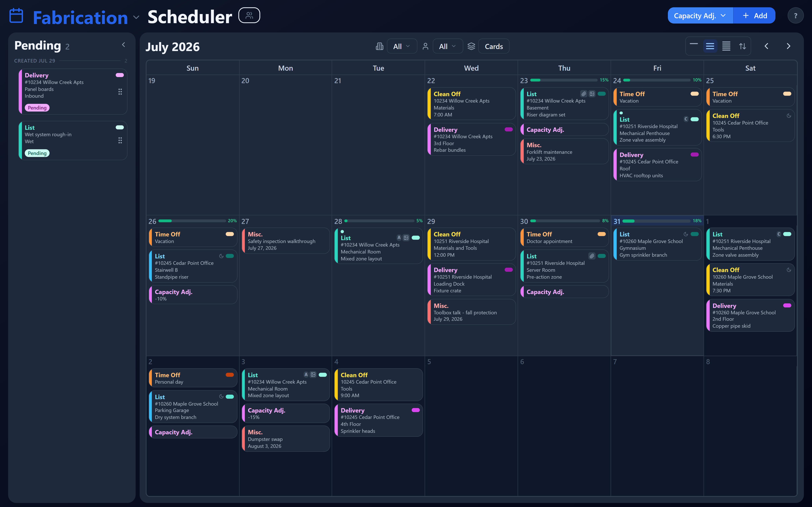
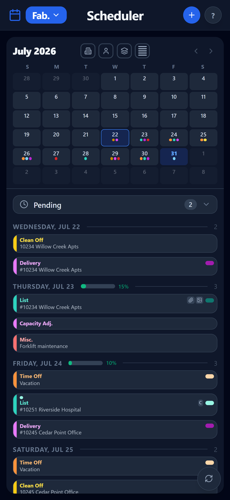

Eliminate the guesswork and the questions, streamline the process, get more done. Scheduler is built for MEP companies and fabrication shops — scheduling, deliveries, cut lists, clean-offs, time off and daily capacity as cards on the days they belong to. Every company gets its own branded copy and its own database. Fabrication is live today; Engineering, Field and Management are on the way.
The trial starts with two weeks of example cards already on the calendar — nothing to set up before you can look around.
Color-coded by card type, filtered by discipline, dark or light, with one density control setting how much you're looking at — a single week, three weeks, or five. On a phone the same schedule collapses to the discipline you're working in, so the shop foreman, engineers, project managers and field crews all see what they need without pinching around a desktop layout. And it isn't a viewer: cards get created, rescheduled, attached to and edited from the phone, with the same features as the desktop version.

Three-week density, with the pending queue held alongside. One button switches between a single week, three weeks and five.

The same schedule on a phone, at five-week density — the days as a list below it.
Mobile matters, because most of the people on your schedule aren't at a desk: 92% of construction workers use a smartphone every day at work — JBKnowledge ConTech Report. The phone is where the schedule actually gets read, so it gets the whole app.
Four disciplines, one schedule
Fabrication
Available now
Deliveries, lists, clean-offs, time off, misc. and daily capacity — the module you can use today.
Engineering
In development
Detailing and release dates feeding the shop directly, on the same calendar.
Field
In development
Install dates and site needs, pulling from what the shop has committed.
Management
In development
The company view: what's committed, what's at risk, who's carrying it.
01
Work shows up as cards on the calendar: Delivery, List, Clean Off, Time Off, Misc. and Capacity Adj. Drag one to reschedule it. Past days lock themselves so yesterday's schedule stops moving under you.
02
Each day carries a capacity, and a Capacity Adj. card changes it when a crew is short or a shift gets added. You can see the day filling up before you promise it to a PM.
03
Fabrication lists and shop drawings attach as PDFs to the card itself, previewed in place instead of downloaded and lost. The plan room creates the Field Package from the card — and if any are still missing by the designated time, notifications go out to the team.
04
Everyone connects their own ACC login and browses the projects and folders they're entitled to. Attach a file and it stays live-linked to ACC, with a synced copy behind it — if the live link ever fails, you still see the drawing, and you're told it may not be the newest.
05
Not just who gets in — who can see, create, edit and delete each individual field, per discipline. A detailer, a shop lead and a PM can share one card and each touch only their part of it. Every change is written to an audit log.
06
A daily fabrication digest, field-package alerts and a notice when new work lands on a team's plate — sent at times your administrator picks, each one linking straight to the card it's about.
07
Card types are configuration, not code. Add a field, rename a status, recolor a card type in the admin console and the calendar picks it up — because your shop doesn't run exactly like the shop across town.
Each company runs on a separate database and its own deployment. Your schedule doesn't sit in a table next to a competitor's.
Your company name in the app and your own address to log in at.
A rolling backup runs every night, per company, so a bad afternoon isn't a lost month.
Who changed the date, and when. Useful the week someone insists they didn't.
Turn it on and the screen annotates itself — plus a Getting Started page for new hires.
Anyone can send a note from the app. It reaches a person who works in this trade.
Step 01
The trial opens on two weeks of example cards across all six card types — you're reading a real calendar, not an empty grid.
Step 02
Add your jobs, teams and resources, then schedule the job that's causing the most noise this week.
Step 03
Set permission types for detailing, the floor and the PMs, switch on the daily digest, and connect ACC if you use it.
Fabrication and MEP companies: shop owners and GMs, production and shop-floor managers, detailers and CAD leads, and the project managers and estimators who live off their dates.
The whole Fabrication module, seeded with example cards so there's something to look at on day one. Trial accounts can see everything and edit their own work. Length and terms are confirmed when you sign up.
No. Every company gets its own database and its own deployment, branded with your company name — not one shared database with a column separating you from everyone else.
Yes, and it's the whole app — not a stripped-down viewer. A mobile layout with its own discipline tabs, where you can create, reschedule, attach and edit exactly as you would at a desk. It runs in the browser; there's nothing to install.
No. Start with the schedule — the part spreadsheets handle worst — and keep drawings in Autodesk Construction Cloud where they already live; the app reaches into ACC rather than asking you to move anything.
They're in development on the same calendar and the same data model as Fabrication, so what you set up now keeps working when they land. Trial companies see them first.
Per active user — you pay for the people actually using it, not a shelf of unused seats. Plans are being finalized; early adopters will be offered special pricing, starting at $5 per seat/month.
Take the job currently living on a whiteboard and three spreadsheets, put it into the fabrication schedule, and see the week the way your shop actually runs it.